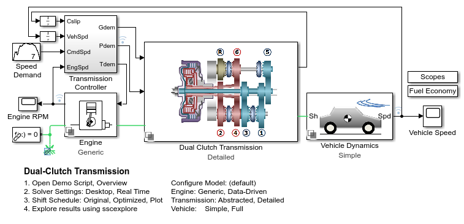
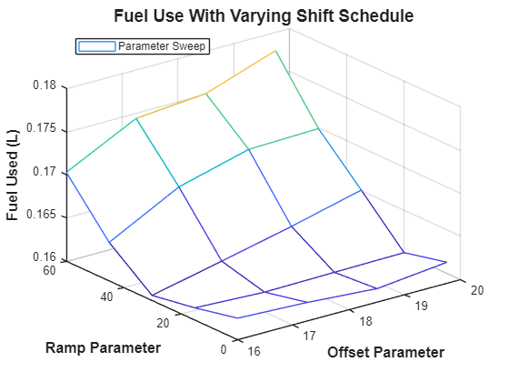
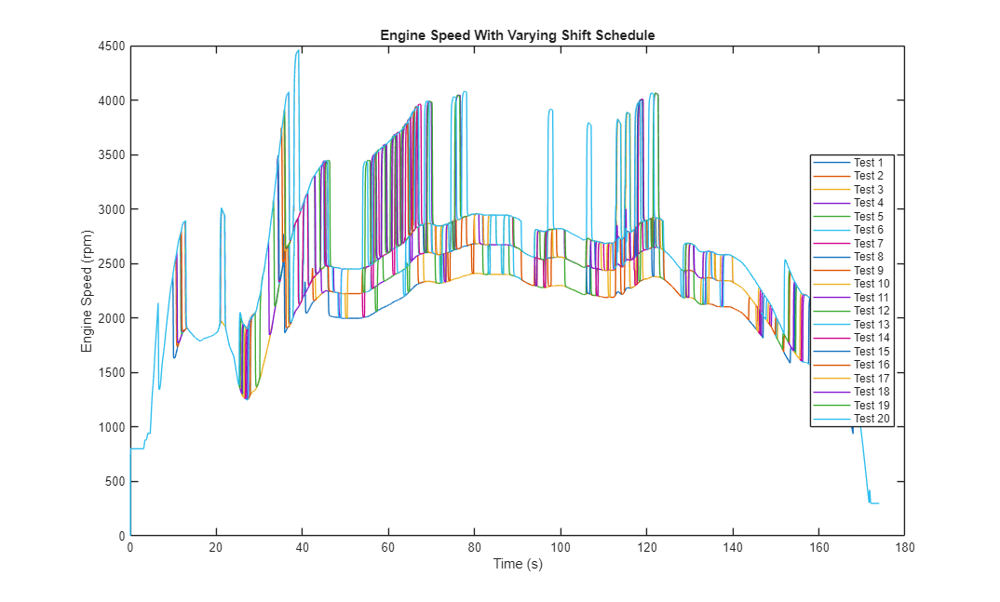

Dual Clutch Transmission - Parameter Sweep, 2 Parameter, Parallel Computing
This example shows a vehicle with a five-speed automatic dual-clutch transmission. The transmission controller converts the pedal deflection into a demanded torque. This demanded torque is then passed to the engine management. The pedal deflection and the vehicle speed are also used by the transmission controller to determine when the gear shifts should occur. Gear shifts are implemented via the two clutches, one clutch pressure being ramped up as the other clutch pressure is ramped down. Gear pre-selection via dog clutches ensures that the correct gear is fully selected before the on-going clutch is enabled.
The script below uses varies the shift map to see the impact on fuel economy. The shift map is parameterized with 2 parameters to limit the design space.
Contents
Model

Run Parameter Sweep
[22-Dec-2025 17:19:51] Checking for availability of parallel pool...
Starting parallel pool (parpool) using the 'Processes' profile ...
Preserving jobs with IDs: 1 because they contain crash dump files.
You can use 'delete(myCluster.Jobs)' to remove all jobs created with profile Processes. To create 'myCluster' use 'myCluster = parcluster('Processes')'.
Connected to parallel pool with 4 workers.
[22-Dec-2025 17:20:09] Starting Simulink on parallel workers...
[22-Dec-2025 17:20:14] Configuring simulation cache folder on parallel workers...
[22-Dec-2025 17:20:14] Transferring base workspace variables used in the model to parallel workers...
[22-Dec-2025 17:20:14] Total size of base workspace variables to send to parallel workers is 13.87 MB.
[22-Dec-2025 17:20:14] Loading model on parallel workers...
[22-Dec-2025 17:20:23] Running simulations...
[22-Dec-2025 17:20:53] Completed 1 of 20 simulation runs
[22-Dec-2025 17:20:53] Received simulation output (size: 1.07 MB) for run 1 from parallel worker.
[22-Dec-2025 17:20:54] Completed 2 of 20 simulation runs
[22-Dec-2025 17:20:54] Received simulation output (size: 1.08 MB) for run 2 from parallel worker.
[22-Dec-2025 17:20:54] Completed 3 of 20 simulation runs
[22-Dec-2025 17:20:54] Received simulation output (size: 1.07 MB) for run 4 from parallel worker.
[22-Dec-2025 17:20:54] Completed 4 of 20 simulation runs
[22-Dec-2025 17:20:54] Received simulation output (size: 1.09 MB) for run 3 from parallel worker.
[22-Dec-2025 17:21:04] Completed 5 of 20 simulation runs
[22-Dec-2025 17:21:04] Received simulation output (size: 1.11 MB) for run 7 from parallel worker.
[22-Dec-2025 17:21:04] Completed 6 of 20 simulation runs
[22-Dec-2025 17:21:04] Received simulation output (size: 1.18 MB) for run 5 from parallel worker.
[22-Dec-2025 17:21:04] Completed 7 of 20 simulation runs
[22-Dec-2025 17:21:04] Received simulation output (size: 1.14 MB) for run 6 from parallel worker.
[22-Dec-2025 17:21:04] Completed 8 of 20 simulation runs
[22-Dec-2025 17:21:04] Received simulation output (size: 1.12 MB) for run 8 from parallel worker.
[22-Dec-2025 17:21:14] Completed 9 of 20 simulation runs
[22-Dec-2025 17:21:14] Received simulation output (size: 1.16 MB) for run 10 from parallel worker.
[22-Dec-2025 17:21:14] Completed 10 of 20 simulation runs
[22-Dec-2025 17:21:14] Received simulation output (size: 1.16 MB) for run 9 from parallel worker.
[22-Dec-2025 17:21:14] Completed 11 of 20 simulation runs
[22-Dec-2025 17:21:14] Received simulation output (size: 1.17 MB) for run 11 from parallel worker.
[22-Dec-2025 17:21:15] Completed 12 of 20 simulation runs
[22-Dec-2025 17:21:15] Received simulation output (size: 1.18 MB) for run 12 from parallel worker.
[22-Dec-2025 17:21:24] Completed 13 of 20 simulation runs
[22-Dec-2025 17:21:24] Received simulation output (size: 1.21 MB) for run 14 from parallel worker.
[22-Dec-2025 17:21:24] Completed 14 of 20 simulation runs
[22-Dec-2025 17:21:24] Received simulation output (size: 1.19 MB) for run 13 from parallel worker.
[22-Dec-2025 17:21:24] Completed 15 of 20 simulation runs
[22-Dec-2025 17:21:24] Received simulation output (size: 1.20 MB) for run 15 from parallel worker.
[22-Dec-2025 17:21:24] Completed 16 of 20 simulation runs
[22-Dec-2025 17:21:24] Received simulation output (size: 1.18 MB) for run 16 from parallel worker.
[22-Dec-2025 17:21:33] Completed 17 of 20 simulation runs
[22-Dec-2025 17:21:34] Received simulation output (size: 1.21 MB) for run 17 from parallel worker.
[22-Dec-2025 17:21:34] Completed 18 of 20 simulation runs
[22-Dec-2025 17:21:34] Received simulation output (size: 1.21 MB) for run 18 from parallel worker.
[22-Dec-2025 17:21:34] Completed 19 of 20 simulation runs
[22-Dec-2025 17:21:34] Received simulation output (size: 1.20 MB) for run 19 from parallel worker.
[22-Dec-2025 17:21:34] Completed 20 of 20 simulation runs
[22-Dec-2025 17:21:34] Received simulation output (size: 1.20 MB) for run 20 from parallel worker.
[22-Dec-2025 17:21:34] Cleaning up parallel workers...
Parallel pool using the 'Processes' profile is shutting down.

